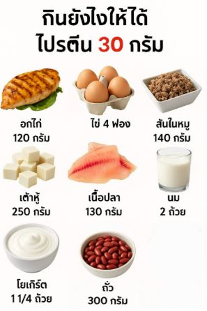
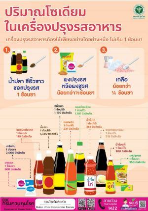
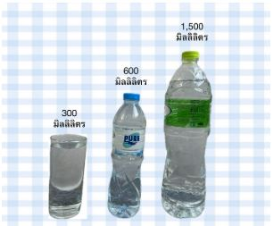
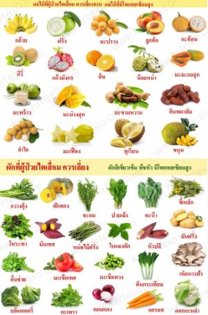
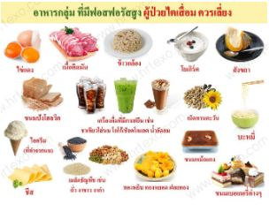
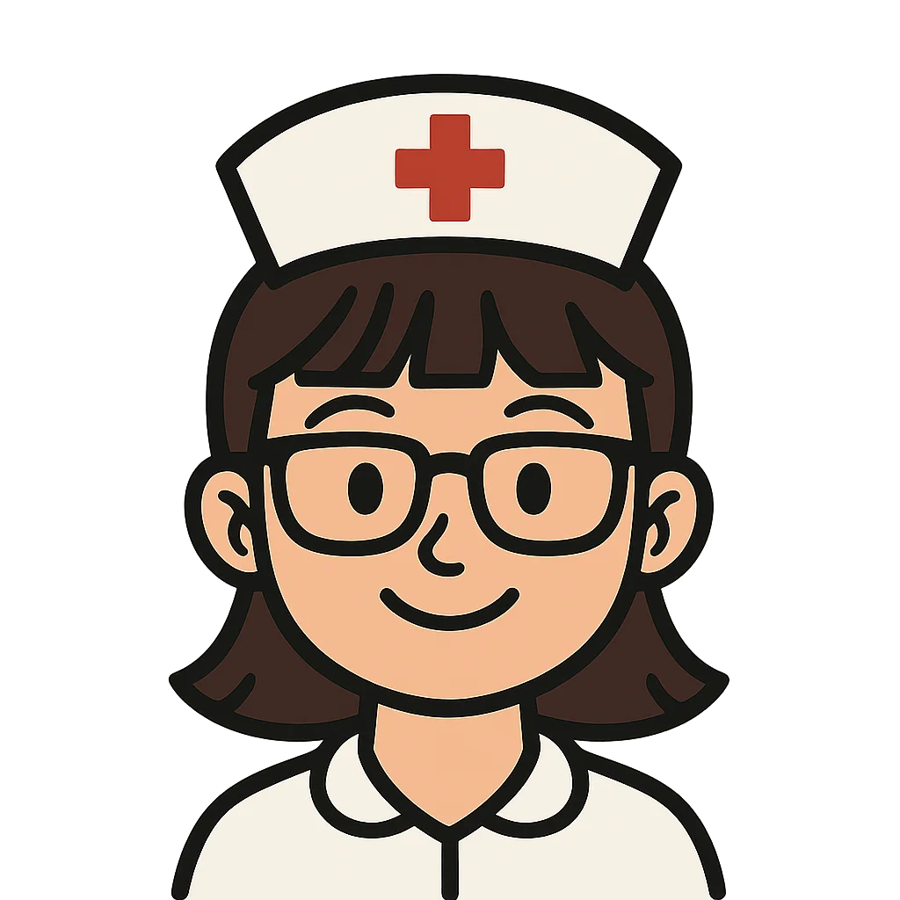

ข้อดีของการล้างไตทางช่องท้องแบบต่อเนื่อง
🏠 1. เพิ่มความเป็นอิสระและคุณภาพชีวิต
ทำได้เองที่บ้าน
ผู้ป่วยสามารถทำการล้างไตได้เองที่บ้าน ที่ทำงาน หรือระหว่างเดินทาง โดยไม่ต้องเดินทางไปโรงพยาบาลหรือศูนย์ไตเทียมบ่อยครั้ง ทำให้ประหยัดเวลาและค่าใช้จ่ายในการเดินทาง
ความยืดหยุ่นของตารางเวลา
สามารถปรับตารางการเปลี่ยนน้ำยาให้เข้ากับกิจวัตรประจำวันของผู้ป่วยได้ง่ายกว่าฟอกเลือดด้วยเครื่องไตเทียม
คงสถานะการทำงาน
ผู้ป่วยหลายรายสามารถรักษาสถานะการทำงานหรือเรียนหนังสือได้ตามปกติ
💗 2. เสถียรภาพทางกายภาพและระบบหัวใจและหลอดเลือด
- การกำจัดของเสียอย่างต่อเนื่อง: เป็นการล้างไตแบบ "ต่อเนื่อง" ตลอด 24 ชั่วโมง 7 วันต่อสัปดาห์ ซึ่งเลียนแบบการทำงานของไตตามธรรมชาติได้ดีกว่าการฟอกเลือดแบบเป็นครั้งคราว
- การกำจัดน้ำและของเสียที่คงที่: การกำจัดน้ำและของเสียเกิดขึ้นอย่างช้าๆ สม่ำเสมอ และช่วยลดภาระต่อระบบหัวใจและหลอดเลือด
- ดีต่อหลอดเลือด: ไม่จำเป็นต้องเจาะหลอดเลือดขนาดใหญ่เพื่อสร้างเส้นฟอกไต ทำให้หลอดเลือดดำและหลอดเลือดแดงของผู้ป่วยได้รับการเก็บรักษาไว้สำหรับการรักษาอื่นๆ ในอนาคต
🍽️ 3. การควบคุมปริมาณน้ำและสารอาหาร
- ควบคุมปริมาณน้ำได้ดีกว่า: เนื่องจากการล้างไตเกิดขึ้นทุกวัน ทำให้ผู้ป่วยสามารถควบคุมปริมาณน้ำในร่างกายได้ดีกว่า
- ยืดหยุ่นด้านอาหาร: ผู้ป่วยมักจะได้รับอนุญาตให้รับประทานอาหารที่มีโปรตีนสูงขึ้น และมักจะจำกัดโพแทสเซียมได้น้อยกว่าผู้ป่วยฟอกเลือดด้วยเครื่องไตเทียม
🌟 4. ข้อดีอื่นๆ
รักษาการทำงานของไตที่เหลืออยู่: การล้างไตอย่างช้าๆ สม่ำเสมออาจช่วยรักษาการทำงานของไตที่เหลืออยู่
การรับประทานอาหาร
🎯 1. เป้าหมายโภชนาการในผู้ป่วยล้างไตทางหน้าท้อง
- ป้องกันและแก้ไขภาวะทุพโภชนาการ
- รักษามวลกล้ามเนื้อและน้ำหนักให้อยู่ในช่วงเหมาะสม
- ควบคุมเกลือ น้ำ โพแทสเซียม ฟอสฟอรัส แคลเซียม ให้อยู่ในเกณฑ์
- ลดความเสี่ยงโรคหัวใจและหลอดเลือด ไขมันในเลือดสูง และภาวะแทรกซ้อนจากน้ำยาล้างไต เช่น น้ำตาลในเลือดสูง ไขมันสูง น้ำหนักขึ้น
📊 2. ปริมาณพลังงานและโปรตีน
⚡ 2.1 พลังงานรวม
แนวทาง KDOQI 2020 แนะนำให้รับพลังงานประมาณ 25-35 kcal/กก./วัน ขึ้นกับอายุ กิจกรรม และภาวะโภชนาการ
🥩 2.2 โปรตีน
ผู้ป่วยล้างไตทางหน้าท้องสูญเสียกรดอะมิโนและโปรตีนออกมากับน้ำยาล้างไตทางหน้าท้องทุกวัน (โดยเฉพาะตอนเกิดการติดเชื้อในช่องท้อง) จึงต้องกินโปรตีนสูงกว่าคนทั่วไป
- โปรตีน 1.2-1.3 g/กก.น้ำหนักอุดมคติ/วัน อย่างน้อย ≥ 50% เป็นโปรตีนคุณภาพสูง เช่น เนื้อสัตว์ ไข่ นม ปลา ถั่วเหลือง
- ถ้ามีการติดเชื้อในช่องท้อง อาจต้องเพิ่มเป็น 1.5-1.7 g/กก./วัน

🧂 2.3 โซเดียม
โซเดียม < 2 g/วัน ≈ เกลือแกง ~1 ช้อนชา/วัน (ประมาณ 5 g)
⚠️ หลีกเลี่ยงอาหารเค็มจัด
น้ำปลา ซีอิ๊ว เต้าเจี้ยว ปลาร้า ไส้กรอก แหนม บะหมี่กึ่งสำเร็จรูป อาหารแปรรูปทุกชนิด
ใช้สมุนไพร/เครื่องเทศเพิ่มรสแทนเกลือ เช่น หอม กระเทียม พริกไทย มะนาว
อ่านฉลากโภชนาการ เลือกผลิตภัณฑ์ที่โซเดียมต่อ 1 หน่วยบริโภค < 140 mg

💧 2.4 น้ำ
ควรดื่มน้ำรวม (น้ำ + เครื่องดื่ม + ซุป + น้ำในผลไม้) ประมาณ 30-35 มิลลิลิตร/กิโลกรัม/วัน และปรับตามปริมาณปัสสาวะ ภาวะบวมของผู้ป่วย

🍌 2.5 โพแทสเซียม
น้ำยาล้างไตทางหน้าท้องสูตรมาตรฐานไม่มีโพแทสเซียม → ผู้ป่วยมีแนวโน้มโพแทสเซียมต่ำ แนะนำให้ปรับการกินอาหารที่มีโพแทสเซียมตามระดับโพแทสเซียมในเลือด
- โพแทสเซียมปกติหรือต่ำ: ไม่จำเป็นต้องห้ามผักผลไม้ทั้งหมด อาจเลือกกินผักผลไม้ไทยได้วันละ 2-3 ส่วน เช่น แอปเปิ้ล ชมพู่ ฝรั่ง แตงโม แตงกวา ฟักทองต้ม
⚠️ โพแทสเซียมสูง
ลดอาหารที่มีโพแทสเซียมสูง เช่น กล้วยน้ำว้า น้ำส้มคั้น มันฝรั่ง มันเทศ ทุเรียน น้ำมะพร้าว น้ำผลไม้เข้มข้น

🦴 2.6 ฟอสฟอรัส
จำกัดฟอสฟอรัสที่รับประทาน 5-10 mg/กก.น้ำหนักอุดมคติ/วัน แต่ไม่เกิน 800 mg/วัน ควบคู่กับการใช้ยาจับฟอสเฟต
⚠️ หลีกเลี่ยงอาหารฟอสฟอรัสสูง
- นมวัวเต็มมันเนย ชีส โยเกิร์ตปริมาณมาก
- เครื่องในสัตว์ ปลาตัวเล็กกินทั้งก้าง (ปลาซิว ปลาข้าวสาร)
- ถั่วเมล็ดแห้ง/ธัญพืชบางชนิดในปริมาณมาก
- อาหารแปรรูปที่ใส่สารกันเสีย (ไส้กรอก แฮม นักเก็ต)

🍚 2.7 คาร์โบไฮเดรต
- เลือกแป้งเชิงซ้อน: ข้าวสวย/ข้าวต้ม ข้าวไม่ขัดสีในปริมาณที่เหมาะ (ต้องระวังฟอสฟอรัสในข้าวกล้อง)
- ลดน้ำตาลทราย เครื่องดื่มหวาน ขนมหวาน
- ผู้ป่วยเบาหวานต้องปรับคาร์บจากอาหารให้น้อยลง และปรับยา/อินซูลินตามคำแนะนำแพทย์
🥑 2.8 ไขมัน
แนะนำให้ลดไขมันอิ่มตัว <7% ของพลังงาน และไขมันไม่อิ่มตัวหลายตำแหน่งไม่เกิน 10% ของพลังงาน/วัน
- เลือกไขมันดีจากปลา ถั่วเปลือกแข็งเล็กน้อย น้ำมันพืช รำข้าว ถั่วเหลือง มะกอก
- ลดของทอด หนังไก่ หมูสามชั้น อาหารฟาสต์ฟู้ด
💊 2.9 วิตามิน
วิตามินที่ละลายในน้ำได้จากอาหารปกติ + พิจารณาเสริมวิตามิน B6 10 mg/วัน และวิตามิน C 100 mg/วัน ถ้ากินอาหารได้น้อย
⚠️ ไม่แนะนำเสริมเป็นประจำ
วิตามิน A, E, K เพราะเสี่ยงสะสม
การออกกำลังกาย
การออกกำลังกายที่เหมาะสมที่สุดสำหรับผู้ป่วยที่ล้างไตทางช่องท้องควรเน้นที่ ระดับเบาถึงปานกลาง โดยทำอย่างสม่ำเสมอ และต้องได้รับคำแนะนำจากแพทย์หรือนักกายภาพบำบัดก่อนเริ่มโปรแกรมการออกกำลังกาย
🫀 การออกกำลังกายแบบแอโรบิก
ช่วยเสริมสร้างสมรรถภาพปอดและหัวใจ
- เดินสบายๆ หรือเดินเร็ว: เป็นกิจกรรมที่ปลอดภัยและทำได้ง่ายที่สุด
- ปั่นจักรยาน: ทั้งแบบอยู่กับที่หรือแบบทั่วไป (ควรระวังเรื่องความปลอดภัยในการขับขี่)
- ว่ายน้ำ: สามารถทำได้ แต่ต้องปรึกษาแพทย์อย่างละเอียดเกี่ยวกับสุขอนามัยของสายล้างไตเพื่อป้องกันการติดเชื้อ
- เต้นแอโรบิกเบาๆ
💪 การออกกำลังกายเพื่อเพิ่มความแข็งแรงของกล้ามเนื้อ
ควรใช้ท่าบริหารที่ไม่เพิ่มแรงดันในช่องท้องมากเกินไป
- บริหารกล้ามเนื้อหัวไหล่: เช่น การยกแขน กางแขน
- บริหารกล้ามเนื้อต้นขาและสะโพก: เช่น การลุก-นั่ง หรือบริหารในท่านอน
- การออกกำลังกายด้วยยางยืด: เพื่อสร้างแรงต้านเบาๆ
🏋️ ท่าออกกำลังกาย

ท่าที่ 1
บริหารกล้ามเนื้อหัวไหล่ ยกแขน
ท่าที่ 2
บริหารกล้ามเนื้อหัวไหล่ กางแขน
ท่าที่ 3
บริหารกล้ามเนื้อต้นแขนด้านหน้า
ท่าที่ 4
บริหารกล้ามเนื้อต้นขาด้านหน้า
ท่าที่ 5
บริหารกล้ามเนื้องอสะโพก
ท่าที่ 6
บริหารกล้ามเนื้อเหยียดสะโพก
ท่าที่ 7
ท่าบริหารกล้ามเนื้อสะโพก กางขา
ท่าที่ 8
ท่าบริหารกล้ามเนื้อน่อง
ท่าที่ 9
ท่าบริหารกล้ามเนื้อหน้าขา ลุก-นั่ง
🦶 วิธีการลดบวมบริเวณปลายเท้า
นอนหงายยกขาสูง
กระดกปลายเท้าขึ้น-ลง
🫁 เสริมสร้างสมรรถภาพปอดและการหายใจ
ประสานมือยกแขน
ยกแขนทั้งสองข้างช้าๆ ไปทางซ้าย-ขวา พร้อมหายใจออก
📋 คำแนะนำทั่วไป
ความถี่
อย่างน้อย 3-5 วันต่อสัปดาห์
ระยะเวลาและความหนัก
เริ่มจากช่วงสั้นๆ และค่อยๆ เพิ่มเวลาจนสามารถออกกำลังกายได้ประมาณ 30-60 นาทีต่อวัน รวมอย่างน้อย 150 นาทีต่อสัปดาห์ ในระดับความหนักเบาถึงปานกลาง
ช่วงเวลา
หากมีน้ำยาอยู่ในช่องท้อง ควรระมัดระวังการออกกำลังกายบางชนิด การออกกำลังกายอาจทำได้ทั้งในขณะที่มีหรือไม่มีน้ำยาในช่องท้อง แต่ควรทดลองและสังเกตอาการ
🚫 ข้อควรระวังที่สำคัญ
- ปรึกษาแพทย์: สิ่งสำคัญที่สุดคือต้องปรึกษาทีมแพทย์ผู้รักษาหรือนักกายภาพบำบัดเพื่อรับคำแนะนำที่เหมาะสมกับสภาพร่างกายของแต่ละบุคคล
- หลีกเลี่ยงกิจกรรมที่เพิ่มแรงดันในช่องท้องสูง: เช่น การยกน้ำหนักที่หนักมาก การซิทอัพ หรือกีฬาที่มีการปะทะรุนแรง ซึ่งอาจส่งผลต่อสายล้างไตหรือผนังหน้าท้อง
- หยุดพักหากมีอาการผิดปกติ: หากรู้สึกเหนื่อยผิดปกติ วิงเวียนศีรษะ หรือเจ็บปวดบริเวณหน้าท้อง ควรรีบหยุดพักและปรึกษาแพทย์
- รักษาสุขอนามัย: ดูแลความสะอาดบริเวณตำแหน่งที่ใส่สายอย่างเคร่งครัดเพื่อป้องกันการติดเชื้อขณะออกกำลังกาย โดยเฉพาะหากมีการว่ายน้ำ
วิธีการดูแลสายล้างไตทางหน้าท้อง ไม่ให้ติดเชื้อ
ล้างมือทุกครั้งก่อนหยิบจับสายล้างไตทางหน้าท้อง
ยึดติดสายล้างไตกับหน้าท้องตลอดเวลา เพื่อป้องกันการดึงรั้งและการบาดเจ็บ
ไม่ดึงรั้งหรือหมุนบิดสายไปมา
ห้ามใช้กรรไกรหรือของมีคมใกล้กับสายล้างไตทางหน้าท้องโดยเด็ดขาด
ทำความสะอาดแผลหน้าท้องทุกวันป้องกันการติดเชื้อ รวมถึงสังเกตบริเวณแผลหน้าท้องว่ามี ปวด บวม แดง ร้อน หรือสารคัดหลั่งที่ผิดปกติ
การสังเกตอาการที่ต้องพบแพทย์
🦠 การติดเชื้อที่บริเวณทางออกของสายล้างไตทางหน้าท้อง
- มีรอยแดง ปวด บวม หรือมีหนองบริเวณที่มีสายล้างไตทางหน้าท้อง
- น้ำยาล้างไตที่ออกมีสีผิดปกติหรือขุ่น
🔥 อาการของภาวะเยื่อบุช่องท้องอักเสบ (Peritonitis)
- ปวดท้อง
- ไข้
- คลื่นไส้หรืออาเจียน
- น้ำยาล้างไตที่ออกจากช่องท้องขุ่น
💧 สัญญาณของภาวะน้ำเกิน
- บวมตามร่างกาย เช่น ที่หน้าหรือเปลือกตา
- หายใจเหนื่อย หรือหายใจลำบาก
- นอนราบไม่ได้
- น้ำหนักตัวเพิ่มขึ้นผิดปกติ
⚡ อาการอื่นๆ ที่ควรพบแพทย์
- ปัสสาวะออกน้อยกว่า 500 ซีซี/วัน หรือไม่มีปัสสาวะเลย
- ปวดศีรษะ
- ตาพร่ามัวกว่าเดิม
- เบื่ออาหาร
- การไหลของน้ำยาล้างไตเข้า-ออกช้าลง